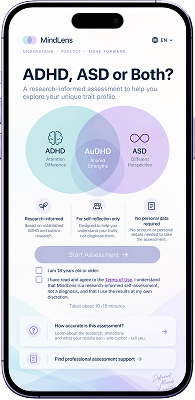
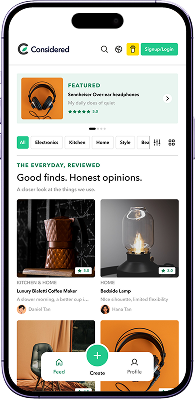
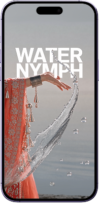
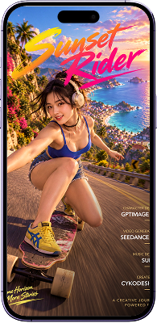

Different
Minds
Brighter
Lives
A more
understanding
tomorrow

MindLens
Adult self-assessment product developed from concept through design and implementation.
Senior Product / UX Designer
20+ years crafting digital experiences, from UX and interaction design to product strategy, design systems and AI-assisted creation.
View work ↓Different
Minds
Brighter
Lives
A more
understanding
tomorrow

Adult self-assessment product developed from concept through design and implementation.
Good finds.
Honest
opinions.
A closer look at
the things we use.

Mobile-first product review experience for discovering, reviewing and rating products.
Water
Nymph
AI character design brought to life.

An exploration of AI-assisted character design, visual direction and video generation.
Sunset
Rider
One ride. Different characters. Same motion.

An exploration of AI-assisted animation, character consistency and music design across different characters.
Senior-level experience across product, UX, interaction and visual design, working with multidisciplinary teams from concept through delivery.
View Resume ↗I’ve worked in digital design since the early web era, across agencies and product teams, designing experiences that are useful, meaningful and human. I’m increasingly exploring the intersection of design, AI and product building.